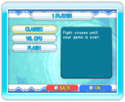
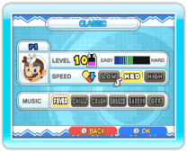
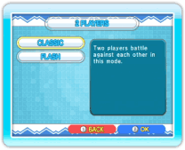
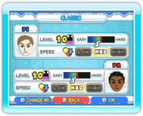

14 |
1-Player Games / 2-Player Games (Dr. Mario) |
 |
 
● 1 Player In this mode, you can play a single-player game of Dr. Mario. Select 1 PLAYER from the Dr. Mario Menu Screen to display the 1-Player Game Selection Screen. From here you can choose from CLASSIC, VS. CPU and FLASH. Select a game and the Game Settings Screen will be displayed. You can set the VIRUS LEVEL (the amount of viruses you start with), SPEED (the rate at which the capsules drop) and MUSIC. Once your choices are made, the game will begin. Note: When playing Vs. CPU Mode or Flash Mode, you can adjust the settings for the computer player as well.  
● 2 Players In this mode, you can play Dr. Mario with two players. Select 2 PLAYER from the Dr. Mario Menu Screen to display the 2-Player Game Selection Screen. From here you can choose CLASSIC or FLASH After selecting a game, you can adjust each player’s settings. You can also change Miis by pressing When the game ends, the Results Screen is displayed. Player 1 can then select TRY AGAIN or QUIT. Note: To play a 2-player game, a second controller must be connected to the Wii console. |

 |
 |
 |